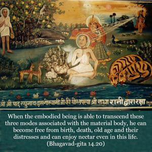
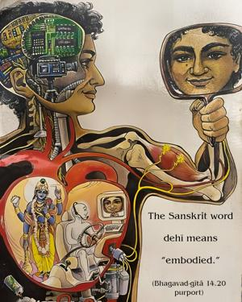

When the embodied being is able to transcend these three modes associated with the material body, he can become free from birth, death, old age and their distresses and can enjoy nectar even in this life.


How one can stay in the transcendental position, even in this body, in full Kṛṣṇa consciousness, is explained in this verse. The Sanskrit word dehī means “embodied.” Although one is within this material body, by his advancement in spiritual knowledge he can be free from the influence of the modes of nature. He can enjoy the happiness of spiritual life even in this body because, after leaving this body, he is certainly going to the spiritual sky. But even in this body he can enjoy spiritual happiness. In other words, devotional service in Kṛṣṇa consciousness is the sign of liberation from material entanglement, and this will be explained in the Eighteenth Chapter. When one is freed from the influence of the modes of material nature, he enters into devotional service. In other words, devotional service in Kṛṣṇa consciousness is the sign of liberation from material entanglement, and this will be explained in the Eighteenth Chapter. When one is freed from the influence of the modes of material nature, he enters into devotional service.